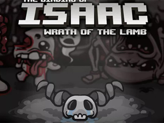
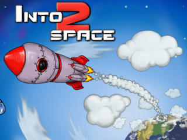
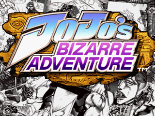

Games

The Binding of Isaac
The Binding of Isaac is a randomly generated action RPG shooter with heavy Rogue-like elements.

Into Space 2
Launch a rocket into the skies!

JoJo's Heritage for the Future
The unique feature of the game is the inclusion of "Stands", powerful projections of a fighter's energy that are unique to each fighter.
Birukov IPZ-118k9